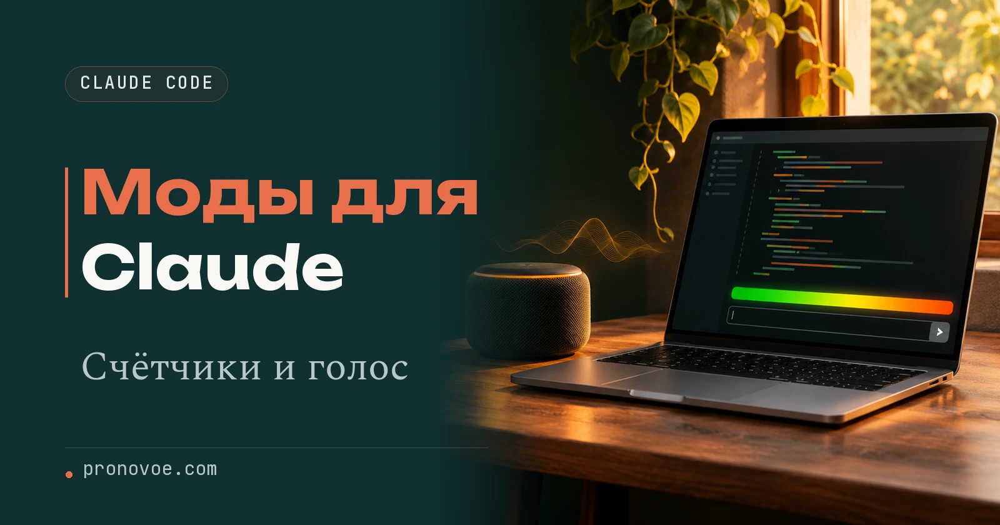
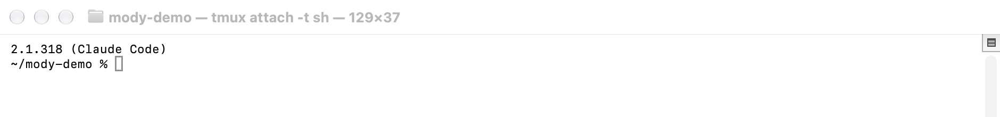
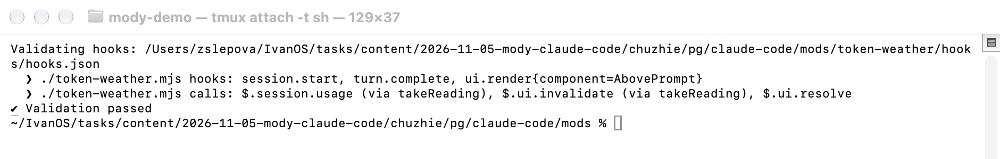
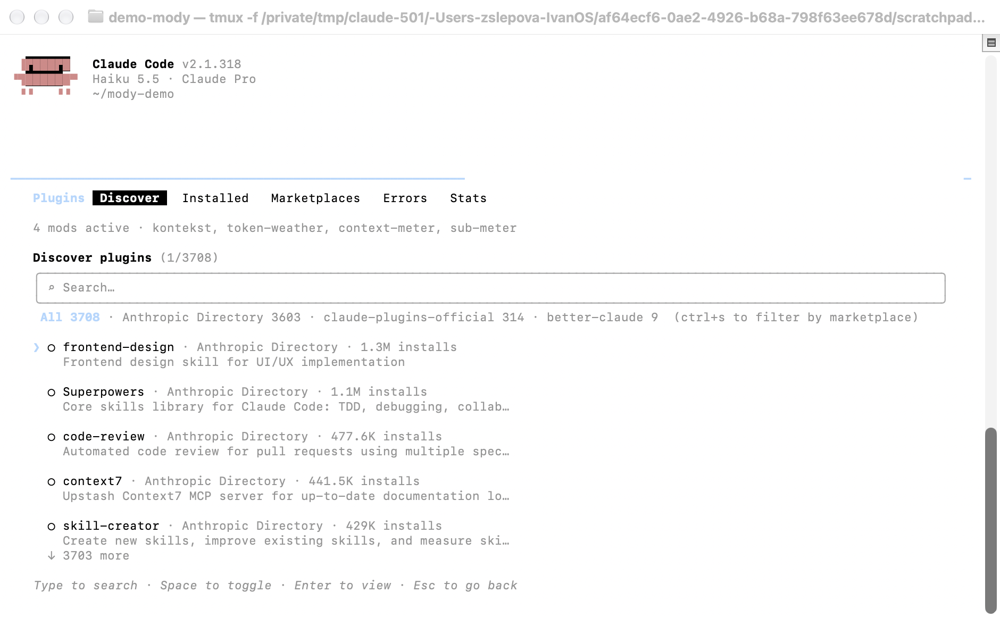
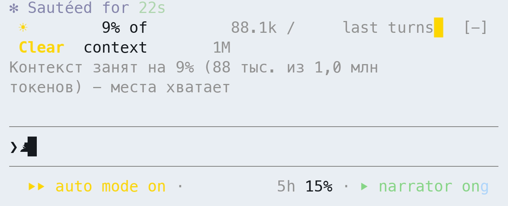
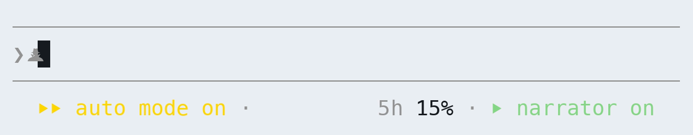
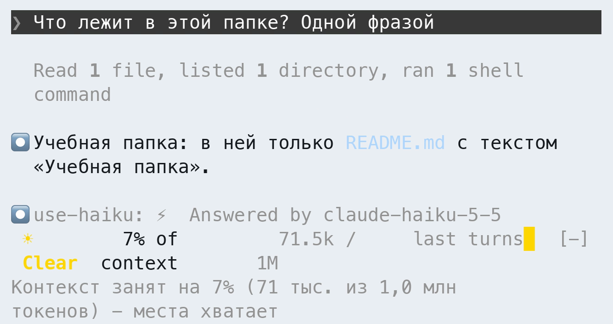
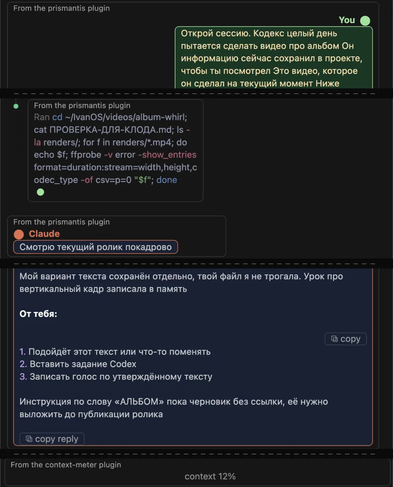
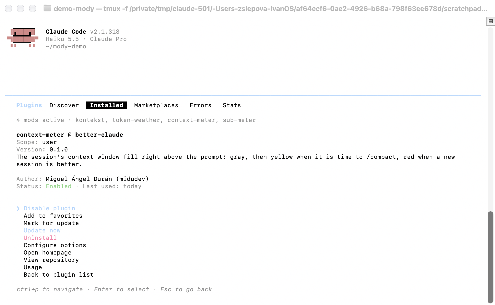

Claude Code
Моды Claude Code: счётчики, голос и Haiku по знаку _
Начальный уровень
Моды делают работу с Claude Code удобнее: в окне видно, сколько памяти чата занято и сколько осталось лимита, Клод вслух пересказывает, что сделал, а простой запрос уходит на младшую Haiku и тратит меньше лимита. Особенно это выручает в VS Code с его техничным интерфейсом (на claude.ai моды не работают), а ниже семь модов: как поставить, сколько тратят, как отключить
Содержание статьи
Что такое мод Claude Code
Claude Code - помощник, который работает с файлами на компьютере и выполняет твои задания. Скиллы учат Клода, что делать, а моды меняют, как он выглядит и как себя ведёт. Например, мод добавляет строку с расходом прямо над полем, куда ты пишешь
Мод устанавливается как плагин, то есть пакет дополнений к программе. В обычном плагине могут лежать скиллы (инструкции для Claude) и команды. Мод содержит исполняемый код, поэтому умеет ещё и рисовать панели, менять оформление, реагировать на твои сообщения
В статье разберём семь модов:
- token-weather - полоса над полем ввода: сколько памяти чата занято, в виде «погоды» от ясно до шторма
- context-meter - то же короче, одна надпись «context» с процентом
- kontekst - наш мод: те же цифры по-русски и подсказка, когда пора начать новый чат
- sub-meter - сколько лимита подписки уже потрачено и когда он обновится
- narrator - после ответа Клод вслух коротко говорит, что сделал
- use-haiku - ставишь «_» в начале запроса, и ответ пишет младшая модель Haiku, лимит тратится медленнее
- prismantis - раскрашивает ответы, 16 цветовых тем на выбор
Здесь понадобятся два разных счётчика. Контекст - сообщения, инструкции и материалы, которые Claude учитывает в текущем разговоре. Он измеряется в токенах, небольших фрагментах текста: токен может быть частью слова, словом или знаком
Лимит подписки - сколько работы сервис разрешает за определённый период. Место в разговоре ещё может быть, а лимит уже закончиться. Поэтому процент контекста и процент лимита на экране могут различаться
Счётчик сам ничего не экономит и не увеличивает лимит. Он помогает заметить расход и решить, когда сжать разговор или начать новый. Некоторые моды сами обращаются к нейросети и дополнительно расходуют лимит
Что понадобится
Нужен установленный Claude Code с действующим доступом. Если его ещё нет, начни с официальной инструкции установки. Про доступ отдельно рассказали в инструкции «Claude из России»
Ниже команды для терминала - окна, в котором программы запускают текстовыми командами. На Mac открой приложение «Терминал», на Windows - PowerShell. Команды, начинающиеся с claude, git или cd, вводи туда; команды с / в начале - в поле сообщения уже открытого Claude Code
claude --versionКоманда выше показывает версию Claude Code. Для всего набора ниже нужна версия Claude Code 2.1.289 или новее: такое требование у use-haiku. Остальные моды доступны с 2.1.287. Если номер меньше, обнови программу по инструкции установки выше.

Моды также работают в приложении Claude Desktop на вкладке Code (с версии Claude Code 2.1.286) и в расширении VS Code. В Desktop номер виден по команде /status в локальной сессии. В облачной сессии, которая выполняется на сервере, нарисованные модом панели не показываются
Если будешь ставить моды сам по шагам из Части 1, нужен ещё Git - программа, которая скачает папку с примерами. Проверь его командой git --version: в ответ должен появиться номер версии
Хочешь сначала попробовать: Часть 1. Попробуй мод на одну сессию
Нужна постоянная установка: Часть 2. Установи мод для следующих запусков
Подсказка по-русски, когда пора начать новый чат: Часть 3. Наш мод kontekst: память чата по-русски
Часть 1. Попробуй мод на одну сессию
Проще всего попросить Claude Code сделать всё за тебя. Открой его и напиши в чат:
Поставь мне мод [token-weather] на одну сессию, я хочу посмотреть, как он работает. Скачай его, проверь, что он запускает на компьютере, и дай одну команду для запускаВместо token-weather можно вписать любой мод из набора модов. Claude скачает пример, проверит его и даст команду для запуска. Если хочешь пройти всё сам и понимать каждый шаг, делай так:
Возьмём token-weather, пример от Anthropic. Он показывает заполнение контекста в виде «погоды»: над полем сообщения появляются процент, число токенов и маленький график последних ответов
Шаг 1. Скачай пример
В терминале выполни по очереди две команды, нажимая Enter после каждой. Первая скачает папку с примерами с GitHub, сайта для хранения кода, вторая откроет в ней папку модов
git clone https://github.com/anthropics/claude-code-playground.gitcd claude-code-playground/claude-code/modsРезультат: терминал находится в папке claude-code-playground/claude-code/mods, в ней лежит token-weather
Шаг 2. Посмотри, что вызывает мод
В том же терминале запусти проверку папки:
claude plugin validate ./token-weatherСтрока hooks: перечисляет события, на которые реагирует мод, например завершение ответа. Строка calls: показывает найденные обращения к возможностям Claude Code. У token-weather это чтение расхода и обновление изображения

Результат: внизу вывода есть Validation passed. Это проверка устройства плагина, а не гарантия безопасности его кода
Мод работает с твоими правами: может читать и менять файлы, запускать программы, выходить в интернет и видеть сообщения. Ставь дополнения от авторов, которым доверяешь. Пробный запуск на одну сессию ограничивает время работы мода, но не его права
Шаг 3. Запусти Claude Code с модом
Не меняя папку терминала, выполни команду. Она откроет новую сессию Claude Code с подключённым примером
claude --plugin-dir ./token-weatherТеперь в поле сообщения Claude Code введи:
/pluginПод вкладками должна появиться строка 1 mod active · token-weather, если других модов нет. На нашем снимке включены сразу четыре, поэтому написано 4 mods active

Закрой меню клавишей Esc и задай короткий вопрос, например «Сколько будет два плюс два?». После ответа появится полоса. На снимке ниже token-weather показывает 9% of context: занято примерно 9% памяти текущего чата. Запись 88.1k / 1M означает 88,1 тысячи токенов из миллиона, процент округлён

Результат: над полем сообщения виден процент заполнения разговора. Русскую строку на этом же кадре добавляет отдельный мод kontekst из части 3. Он, как и token-weather, не вызывает модель и не тратит лимит на подсчёт
Когда память почти заполнена, попроси Claude сохранить результат и всё необходимое для продолжения в файлы, затем открой новый чат в той же папке. Иначе длинную историю придётся сжимать: часть подробностей может потеряться. Новый чат начинает отдельную историю, поэтому важные решения нужно передать ему из сохранённых файлов. Лимит подписки при этом не обнуляется
Чтобы закончить пробу, выйди из сессии командой /exit. В следующий раз запускай обычное claude, без --plugin-dir: пробный мод не загрузится
Часть 2. Установи мод для следующих запусков
Здесь тоже можно попросить Claude Code сделать всё за тебя. Напиши в чат:
Установи мне мод [context-meter] насовсем, чтобы он работал во всех проектах. Перед установкой проверь, что он запускает на компьютере, и скажи, что получилосьClaude подключит каталог и установит мод. Если хочешь пройти всё сам, делай так:
Для постоянной установки нужен маркетплейс - каталог плагинов автора. Здесь используем better-claude: в нём есть отдельные счётчики контекста и лимита подписки
Шаг 1. Подключи каталог
Открой Claude Code командой claude в терминале. В поле сообщения введи:
/plugin marketplace add midudev/better-claudeЕсли появится запрос доверия к источнику, проверь, что указан midudev/better-claude, и подтверди добавление
Шаг 2. Выбери мод и область установки
В том же поле сообщения введи команду для context-meter:
/plugin install context-meter@better-claudeВ карточке выбери Install for you (user scope): мод будет доступен тебе во всех проектах на этом компьютере. Дождись сообщения об установке. Затем открой /plugin, вкладку Installed («Установленные»), и выбери context-meter. Статус Enabled означает, что он включён
Карточка с таким статусом показана Отключить или удалить мод. Если мод ещё не появился среди активных, введи в Claude Code /reload-plugins или начни новую сессию
Результат: context-meter есть во вкладке Installed и в строке активных модов. После ответа появляется надпись context с процентом. В примере VS Code ниже видно context 12%. Счётчик берёт данные Claude Code без собственного запроса к модели
Набор модов
Сначала память чата, затем лимит подписки, голос и Haiku по знаку _. Начни с одного счётчика контекста: token-weather, context-meter и kontekst показывают заполнение одной и той же памяти. Prismantis можно добавить отдельно для оформления
| Мод | Польза | Что тратит |
|---|---|---|
| token-weather | Память чата: процент, токены и график. Установка в части 1, пример полосы | Модель не вызывает, лимит на подсчёт не тратит |
| context-meter | Короткая надпись с процентом над полем сообщения. Установка выше, пример в VS Code | Модель не вызывает, лимит на подсчёт не тратит |
| kontekst | Те же цифры с русской подсказкой. Подключи файл kontekst | Модель не вызывает, лимит на подсчёт не тратит |
| sub-meter | Показывает расход подписки и время до сброса. Лимит подписки: sub-meter | Считывает данные подписки без запроса к модели |
| narrator | Вслух сообщает итог задачи. Голос после ответа: narrator | Каждый пересказ через Haiku расходует лимит; короткий ответ может прочитать без пересказа |
| use-haiku | Один запрос со знаком _ выполняет Haiku. Простой запрос на Haiku: use-haiku | Сам ответ расходует лимит на Haiku |
| prismantis | Меняет цвета и оформление ответов. Раскраска ответов: prismantis | Не вызывает модель и не отправляет сетевые запросы для оформления |
Лимит подписки: sub-meter
Sub-meter показывает внизу окна, сколько лимита подписки уже потрачено и когда он обновится. Так заранее видно, что лимит кончается, и можно успеть сохранить работу
В поле сообщения Claude Code введи команду из уже подключённого каталога better-claude, затем выбери Install for you (user scope). Если мод не появился, выполни /reload-plugins или начни новую сессию
/plugin install sub-meter@better-claude
На кадре 5h 15%: использовано 15% лимита пятичасового периода. Надпись week относится к недельному лимиту. По умолчанию показания меняются каждые восемь секунд; когда хватает места, рядом видно время до сброса
В узком окне строка сокращается или скрывается. Использование Claude в браузере или приложении попадёт в показания после следующего ответа в Claude Code. Счётчик не вызывает модель; при оплате по API, то есть за отдельные обращения, данных подписки нет и он ничего не показывает
Результат: внизу появился процент использованного лимита. Если он почти исчерпан, сохрани незавершённую работу и ориентируйся на время сброса. Новый чат не возвращает потраченный лимит
Голос после ответа: narrator
Чтобы узнать, закончил ли Claude задачу, необязательно возвращаться к окну и читать весь ответ. Narrator озвучивает короткий итог на твоём языке голосом, установленным на компьютере. На кадре выше справа внизу виден переключатель narrator on
Установи мод из better-claude с областью Install for you (user scope), затем введи команду включения в поле сообщения Claude Code:
/plugin install narrator@better-claude/narrator on7 ноября после задачи «составь список покупок на неделю» он сказал: «Я сохранил список покупок на неделю в файл на рабочем столе в папке «Покупки»…». Это краткий пересказ результата, сам список остаётся в файле
Каждый пересказ вызывает Haiku и расходует лимит подписки. Короткий ответ narrator может прочитать напрямую, без нового запроса к модели. Голос берётся из системы, отдельный платный сервис озвучки для этого не нужен
Результат: после следующей задачи слышен итог ответа. Выключить озвучку можно командой /narrator off. Если голоса не слышно, проверь громкость и список доступных голосов командой /narrator voices
Простой запрос на Haiku: use-haiku
Для короткого вопроса не всегда нужна основная модель сессии. Use-haiku из better-claude переключает один запрос на младшую модель Haiku, когда в начале стоит нижнее подчёркивание _. Следующий запрос без этого знака снова выполняет основная модель
Если каталог ещё не добавлен, введи первую команду. Если уже добавлен, переходи ко второй. В карточке выбери Install for you (user scope), затем при необходимости выполни /reload-plugins или начни новую сессию
/plugin marketplace add midudev/better-claude/plugin install use-haiku@better-claudeДождись, пока Claude закончит текущую работу, и отправь запрос в поле сообщения:
_Что лежит в этой папке? Одной фразой
Результат: под ответом появляется строка use-haiku: ⚡ Answered by claude-haiku-5-5. На кадре 7 ноября она подтверждает, что на вопрос о содержимом папки ответила Haiku
Это ручной выбор модели: мод не оценивает сложность сам. Ответ тратит лимит на Haiku, поэтому простые задачи можно отдавать ей, оставляя основную модель для сложных. Точный выигрыш зависит от задачи и условий подписки
Знак должен быть один и стоять в самом начале перед текстом. Одинокий _ и двойной __ не переключают модель. Если отправить запрос, пока Claude ещё работает, он сохранит текущую модель
Раскраска ответов: prismantis
Prismantis меняет оформление ответов, таблиц и кода. В нём 16 палитр и отдельный монохромный вариант. Установи его из собственного каталога, выбрав Install for you (user scope):
/plugin marketplace add NahumLitvin/prismantis/plugin install prismantis@prismantisВ поле сообщения введи /prismantis setup, чтобы выбрать оформление из примеров. Сменить палитру можно командой /prismantis theme <имя>, подставив имя из настроек. При необходимости перезагрузи плагины командой /reload-plugins

Результат: ответы отображаются в выбранной палитре. На кадре из VS Code видны From the prismantis plugin и From the context-meter plugin с показанием context 12%
Для оформления prismantis не вызывает модель и не ходит в сеть. Вспомогательные программы запускаются при отдельных действиях, например копировании HTML или PNG
Часть 3. Наш мод kontekst: память чата по-русски
Полоса контекста на русском
Наш мод kontekst пишет, сколько места занято и пора ли сжимать разговор. Он берёт цифры из Claude Code, модель не вызывает, в сеть не ходит и файлы не читает
На кадре из первой части серая строка сообщает: занято 9%, 88 тысяч из 1 миллиона токенов, места хватает. Размер памяти зависит от модели: у одних это миллион токенов, у других 200 тысяч
Так строка выглядит на 30, 58 и 80%. Это примеры из инструкции мода для окна в 200 тысяч токенов, а не снимки длинного разговора:
Контекст занят на 30% (60 тыс. из 200 тыс. токенов) - места хватает
Контекст занят на 58% (116 тыс. из 200 тыс. токенов) - скоро стоит сделать /compact
Контекст занят на 80% (160 тыс. из 200 тыс. токенов) - пора /compact или новая сессияДо 50% текст серый, с 50% жёлтый, с 75% красный. Команда /compact просит Claude сжать разговор: оставить краткое изложение вместо полной истории. Она освобождает место в контексте, но не сбрасывает лимит подписки
Подключи файл kontekst
- Скачай архив kontekst.zip и распакуй его. Внутри папка
kontekstс кодом, инструкцией и тестами - Если сейчас открыта сессия Claude Code, выйди из неё командой
/exit. Открой терминал в папке, где лежит распакованная папкаkontekst. На Mac можно набратьcd(с пробелом), перетащить в терминал родительскую папку и нажать Enter. На Windows открой эту папку в Проводнике, введиpowershellв адресную строку и нажми Enter - По очереди выполни проверку и запуск:
claude plugin validate ./kontekstclaude --plugin-dir ./kontekstВ открывшемся Claude Code введи /plugin и найди kontekst в строке активных модов. Закрой меню клавишей Esc и задай любой короткий вопрос. До первого ответа русская строка может быть пустой
Результат: над полем сообщения появилась русская подсказка. Чтобы использовать её и в следующий раз, запускай Claude Code из той же папки с той же командой
Какие права получает мод
Даже маленькая полоса на экране может быть частью программы с широкими правами. По документации мод способен читать и менять доступные тебе файлы, запускать программы, отправлять запросы в сеть, видеть сообщения и сохранённые ключи доступа
Мод также может менять действия Claude, отправлять сообщение от твоего имени, одобрять действия без отдельного вопроса и обращаться к модели за твой лимит. Изоляция команд Bash (ограниченная среда для команд терминала) не распространяется на программы, которые запускает сам мод
Перед запуском смотри calls: в выводе проверки: $.process связано с запуском программ, $.fs - с файлами, $.http - с сетью, $.model - с вызовами модели. Отсутствие этих строк само по себе не доказывает безопасность: проверка не заменяет чтение кода и доверие к автору
Отключить или удалить мод
Введи /plugin, перейди во вкладку Installed и выбери нужный мод. Disable plugin отключает его, Uninstall удаляет. На снимке открыт context-meter: здесь же видны его статус Enabled и область установки user

Для мода, подключённого командой --plugin-dir, достаточно выйти через /exit и в следующий раз запустить claude без этого параметра
Результат: после отключения мод исчез из строки mods active в меню /plugin, его полоса больше не появляется
Выключить все моды сразу
Для одного запуска выйди из Claude Code и введи в терминале:
claude --safe-modeЭтот режим также отключает другие пользовательские настройки. Чтобы отключить моды во всех сессиях, в существующем файле ~/.claude/settings.json добавь или измени параметр "disableAllHooks": true, сохранив остальные настройки. Это отключит также обычные обработчики событий и пользовательскую строку состояния. Если не знаком с форматом файла, используй запрос о помощи ниже
Если мод не появился
- Терминал не находит Claude: вернись к инструкции установки из раздела «Что понадобится»
- При скачивании уже существует папка claude-code-playground: пропусти повторное скачивание и перейди в её
claude-code/mods - Проверка не находит папку мода: проверь, из какой папки запускаешь команду. Для token-weather нужна папка
mods, для kontekst - папка, внутри которой лежитkontekst - Установка не находит плагин: сначала добавь его каталог командой
/plugin marketplace addиз нужного раздела, затем повтори установку - Мод установлен, но не активен: проверь Enabled во вкладке Installed, выполни
/reload-pluginsили начни новую сессию - Русская строка пустая: дождись первого ответа Claude. В облачной сессии панель не появится, нужен локальный запуск
- sub-meter не видно: расширь окно. При работе по API вместо подписки он не показывает лимиты
Частые вопросы
Моды экономят токены?
Сами счётчики только показывают расход. По цифрам можно решить, что пора сжать разговор командой /compact или начать новый. Это не обещание экономии по подписке: её ограничения считаются отдельно, а мод с собственными запросами к модели тратит лимит
Чем мод отличается от скилла?
Скиллы учат Клода, что делать, а моды меняют, как он выглядит и как себя ведёт. Скилл даёт текстовые инструкции для задачи, мод запускает свой код: например, рисует полосу или добавляет голос
Работает ли это в обычном чате Claude?
Моды работают в Claude Code: в терминале, на вкладке Code приложения Claude Desktop и в расширении VS Code. В примере VS Code видны оформление prismantis и счётчик context-meter. В обычном чате на claude.ai эти моды не появляются. В облачных сессиях Claude Code код мода может выполняться, но его панели не отображаются
Если что-то непонятно
Отправь этот запрос в Claude и приложи текст ошибки или снимок окна. Замени то, что в скобках, на своё
Хочу [видеть русскую строку заполнения контекста в Claude Code]. Сейчас [запускаю claude --plugin-dir ./kontekst, но полоса не появляется]. Не понимаю [из какой папки вводить команду]. Объясняй простыми словами, по одному шагу. После каждого шага жди моего ответаИсточники
Дополнительные сведения об установке и возможностях, переходить для выполнения шагов необязательно:
- Документация Claude Code о модах: возможности, права и ограничения
- Установка и управление плагинами: каталоги, области установки и обновления
- Пример token-weather от Anthropic: код и инструкция
- Каталог better-claude: context-meter, sub-meter, narrator и use-haiku (лицензия MIT)
- Prismantis: описание тем и установки
Теперь расход виден прямо во время работы, Claude может сообщать итоги голосом, а простые запросы можно отдавать Haiku знаком _. Следующий шаг - поручить Claude собственную задачу: собрать сайт, подготовить контент или сделать бота. Для этого пригодится умение описывать результат и проверять, что получилось. Ниже - что можно делать с нейросетями без знания кода
Что можно делать с нейросетями, если не знаешь кода?
Чтобы почувствовать размах, посмотри Концентрат Ивана Сергеева. ИИ-агенты на твоих глазах собирают продукт, контент, сайты и воронки без кода. Это основа под любую цель: свои услуги, партнёрка, чужой бизнес. Три дня бесплатно, VIP с четвёртым днём - 990 ₽
Забрать КонцентратУже знаешь, чего хочешь? Тогда в мастер-группу Ивана: система продаж на ИИ без продюсера и технаря, сопровождение и сообщество
Заполнить анкету предзаписиНабор открывается редко, кто записался заранее, получает лучшую цену и бонусы. Платить сейчас не нужно
Реклама. ИП Сергеев И. С., ИНН 352511695540. erid: 2Vtzqvk2p6q